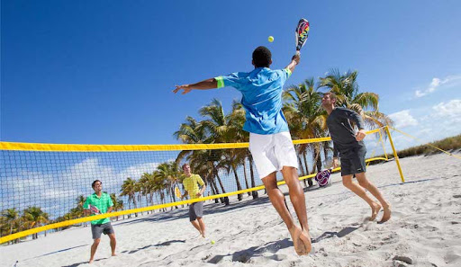
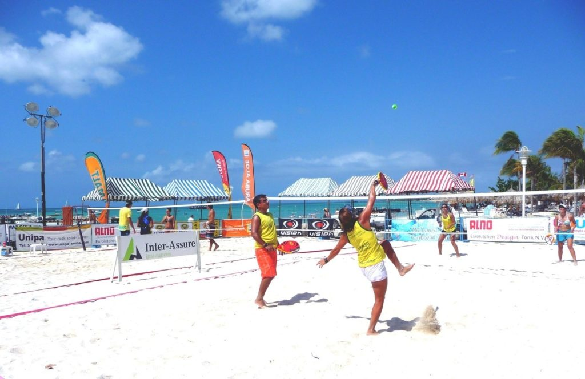

Beach tennis is a relatively unknown sport in the USA, but it is practiced in over 50 countries and there are more than half a million people all around the world playing it, having its greatest popularity in Italy, Brazil and Spain.
Beach Tennis is an exciting sport that offers an excellent cardio workout which is highly aerobic but with low impact to the knees and joints due to it`s practice in the sand. Similar to traditional tennis, Beach Tennis preserves most of the rules and scoring of tennis (15/30/40), modifications were made to adapt to movement around the sand court and to the faster pace of the game.
The main catch is you can’t let the ball hit the ground. Points start with a serve, and end when the ball touches the ground, forcing players to dive to reach difficult plays, similar to volleyball. The objective is to return the ball, with only one hit on each side of the net, as with tennis. Using a depressurized tennis ball, no second serve, smaller court. The sport is (usually) played by two-person teams on a regulation beach volleyball court with a 5-foot-7-inch-high net.
